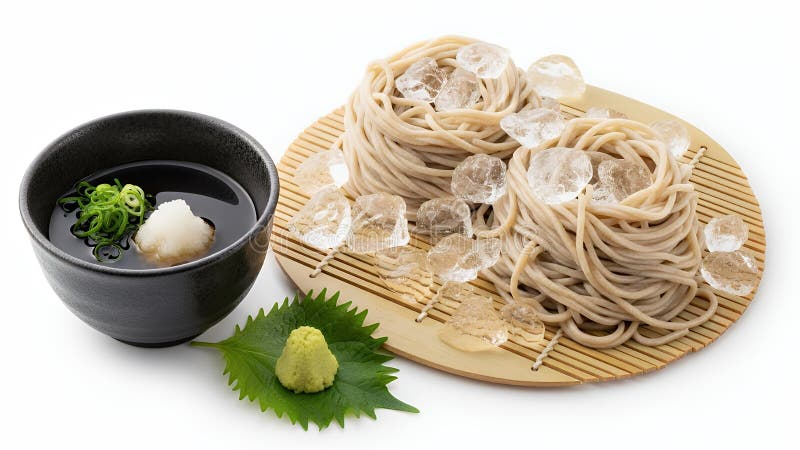
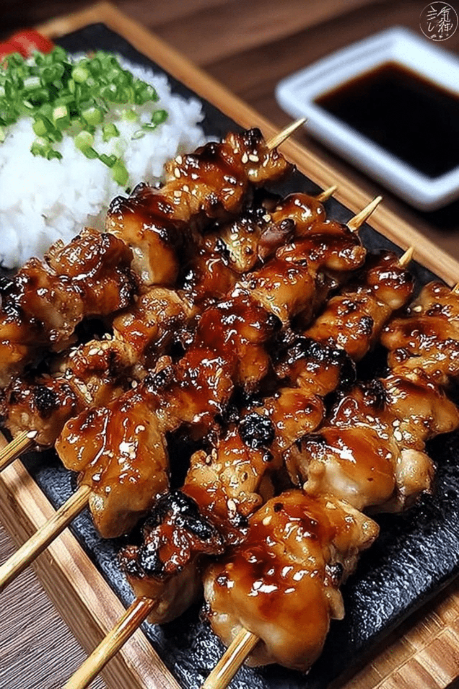
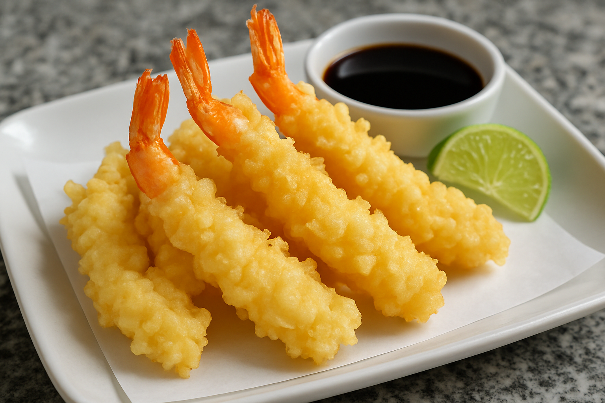

This site was created by Soren
Welcome to the hunger page.
Some delicous food from Japan! 😋
Discover
Discover the food.Japan's food Culture
Visit culture of food.Explore japan
Food Gallery

Soba 🍜
This is Japan's famous noodles.

Yakitori 🍗
Grilled chicken on a stick.

Tempura🍤
Deep fried prawn /seafood